⏳ Vérification de votre niveau…
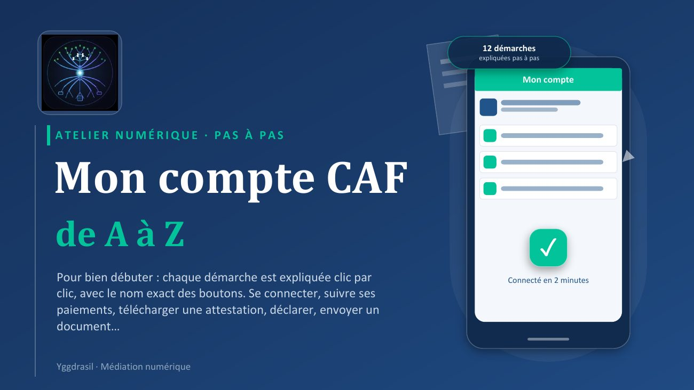
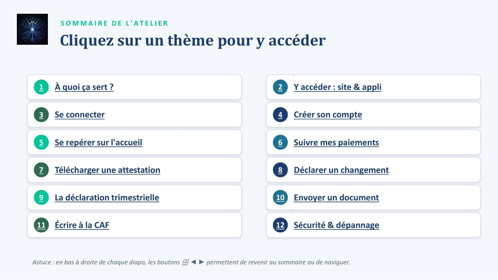
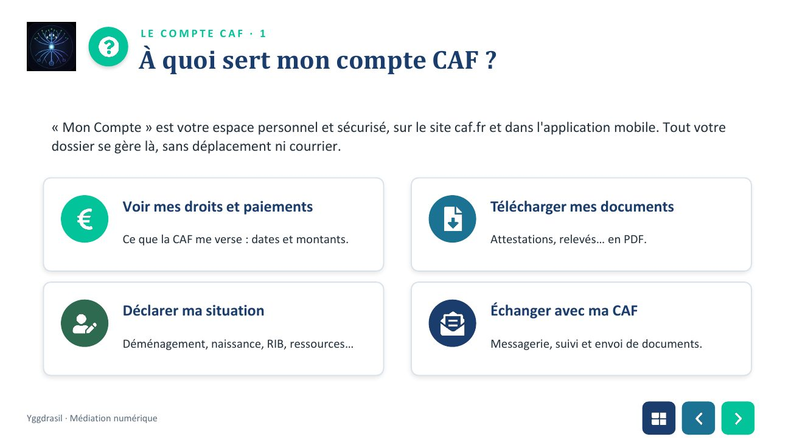
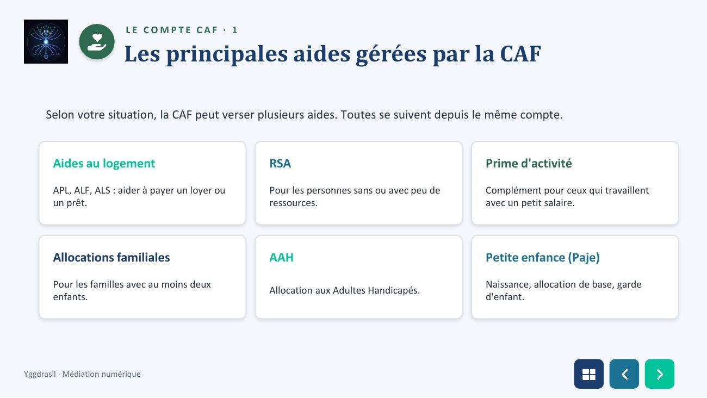
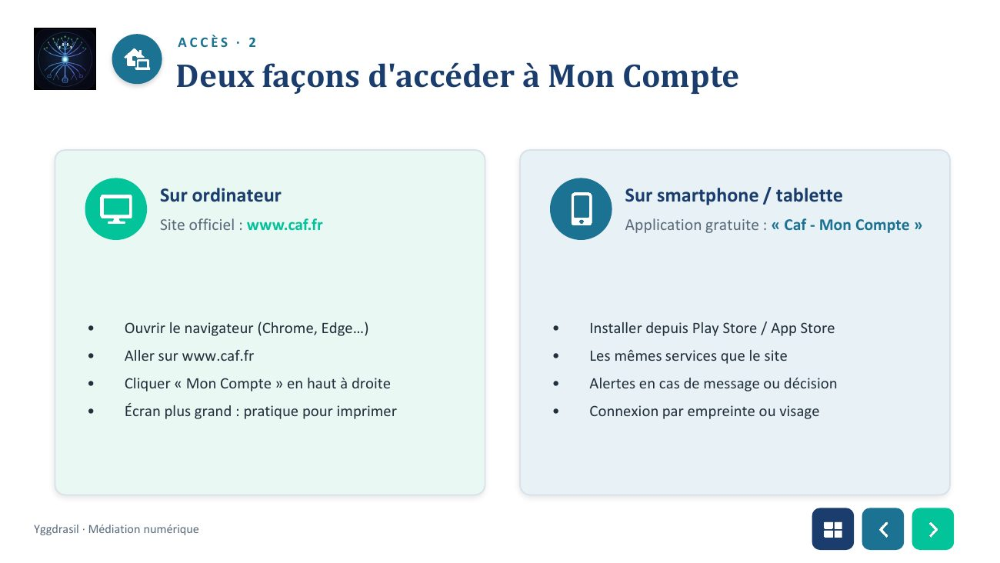
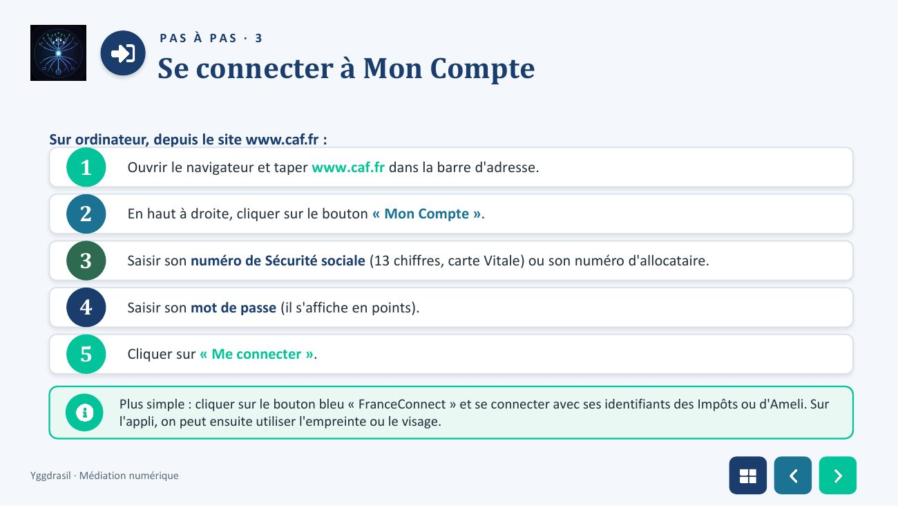
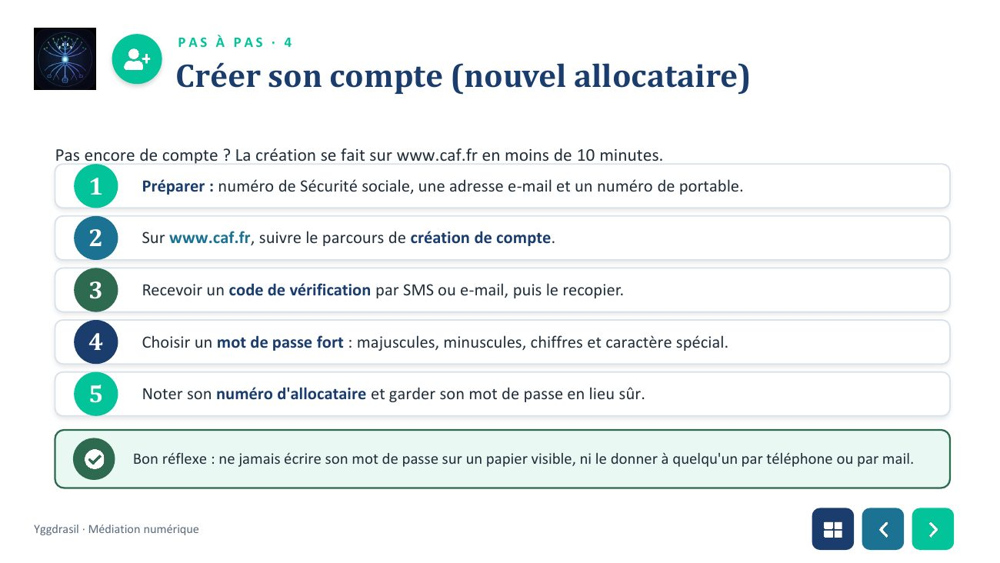
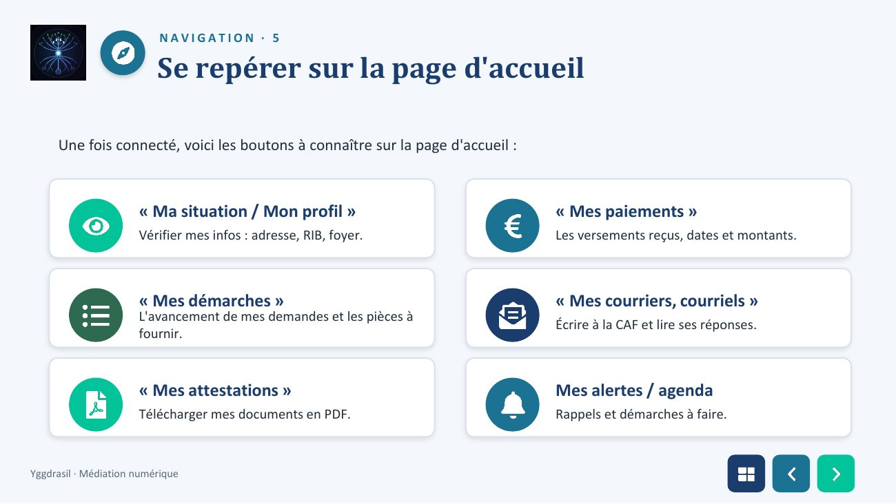
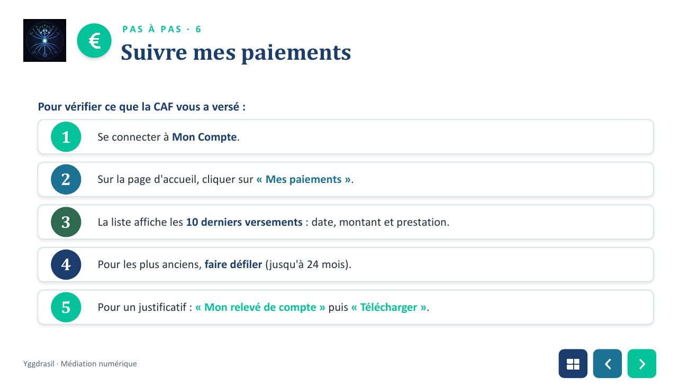
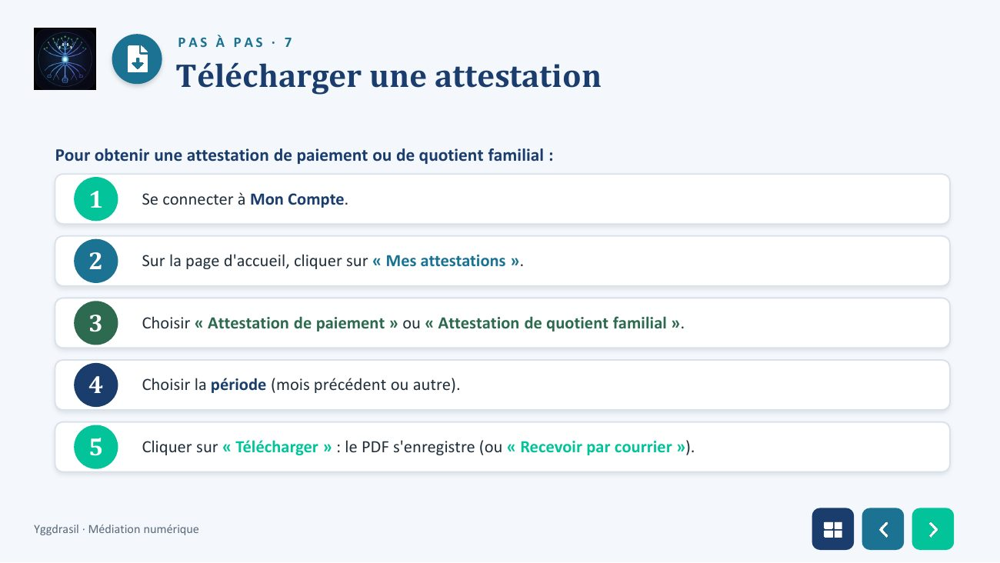
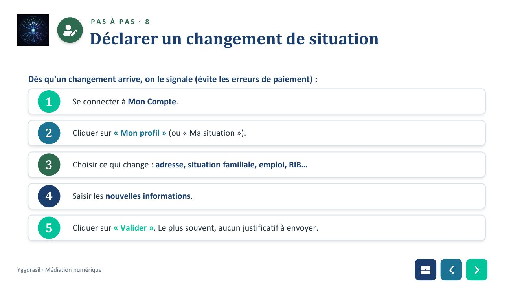
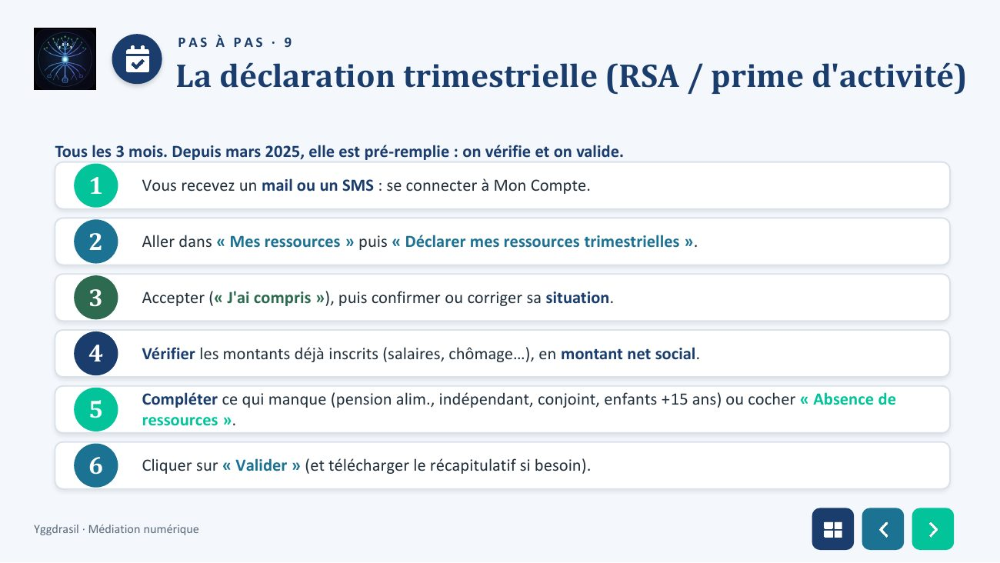
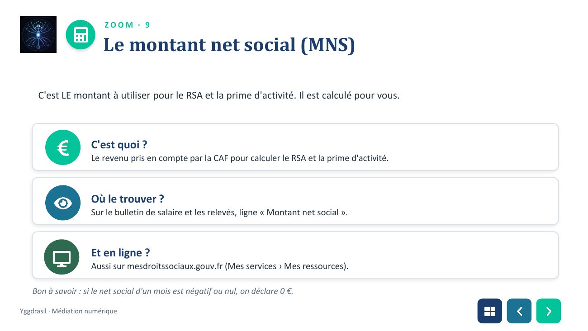
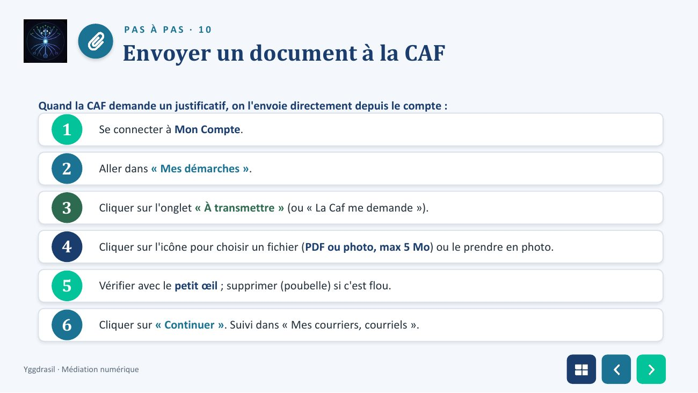
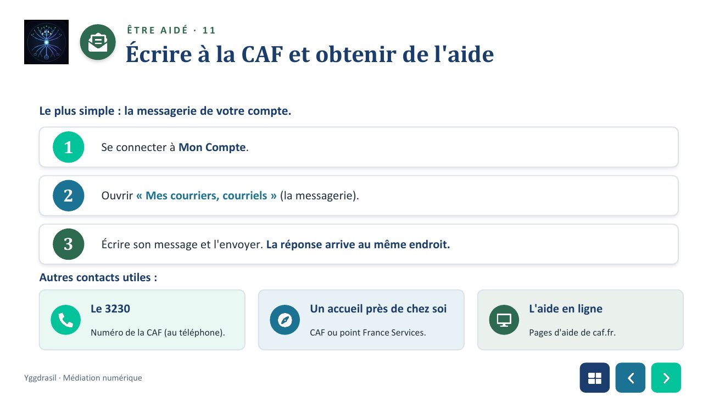
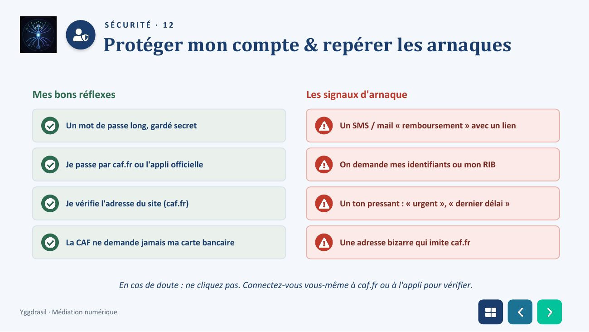
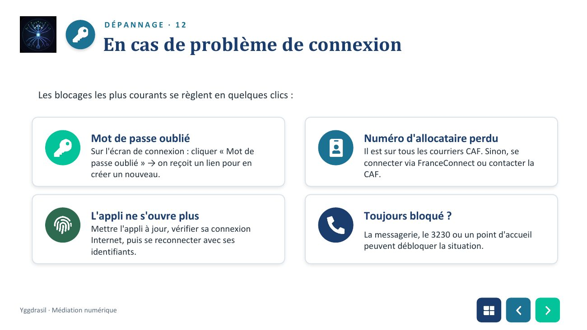
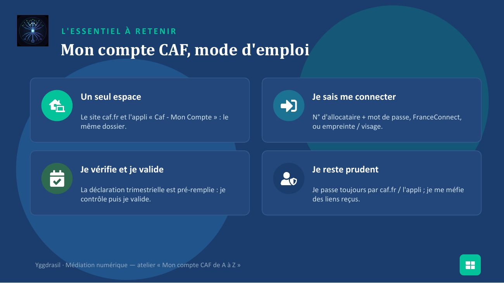
📄 Texte de la page (traduisible — les images ci-dessus restent en français)
12 démarches expliquées pas à pas
Mon compte
ATELIER NUMÉRIQUE · PAS À PAS
Mon compte CAF de A à Z ✓ Pour bien débuter : chaque démarche est expliquée clic par Connecté en 2 minutes clic, avec le nom exact des boutons. Se connecter, suivre ses paiements, télécharger une attestation, déclarer, envoyer un document…
Yggdrasil · Médiation numérique
SOMMAIRE DE L'ATELIER
Cliquez sur un thème pour y accéder À quoi ça sert ? Y accéder : site appli
1 2
1 À quoi ça sert ? 2 Y accéder : site & appli Se connecter Créer son compte
3 4
3 Se connecter 4 Créer son compte Se repérer sur l'accueil Suivre mes paiements
5 6
5 Se repérer sur l'accueil 6 Suivre mes paiements Télécharger une attestation Déclarer un changement
7 8
7 Télécharger une attestation 8 Déclarer un changement La déclaration trimestrielle Envoyer un document
9 10
9 La déclaration trimestrielle 10 Envoyer un document Écrire à la CAF Sécurité dépannage
11 12
11 Écrire à la CAF 12 Sécurité & dépannage
Astuce : en bas à droite de chaque diapo, les boutons ⊞ ◄ ► permettent de revenir au sommaire ou de naviguer.
LE COMPTE CAF · 1
À quoi sert mon compte CAF ?
« Mon Compte » est votre espace personnel et sécurisé, sur le site caf.fr et dans l'application mobile. Tout votre dossier se gère là, sans déplacement ni courrier.
Voir mes droits et paiements Télécharger mes documents
Ce que la CAF me verse : dates et montants. Attestations, relevés… en PDF.
Déclarer ma situation Échanger avec ma CAF
Déménagement, naissance, RIB, ressources… Messagerie, suivi et envoi de documents.
preencoded.png preencoded.png preencoded.png
Yggdrasil · Médiation numérique
LE COMPTE CAF · 1
Les principales aides gérées par la CAF
Selon votre situation, la CAF peut verser plusieurs aides. Toutes se suivent depuis le même compte.
Aides au logement RSA Prime d'activité APL, ALF, ALS : aider à payer un loyer ou Pour les personnes sans ou avec peu de Complément pour ceux qui travaillent un prêt. ressources. avec un petit salaire.
Allocations familiales AAH Petite enfance (Paje) Pour les familles avec au moins deux Naissance, allocation de base, garde Allocation aux Adultes Handicapés. enfants. d'enfant.
preencoded.png preencoded.png preencoded.png
Yggdrasil · Médiation numérique
ACCÈS · 2
Deux façons d'accéder à Mon Compte
Sur ordinateur Sur smartphone / tablette Site officiel : www.caf.fr Application gratuite : « Caf - Mon Compte »
• Ouvrir le navigateur (Chrome, Edge…) • Installer depuis Play Store / App Store • Aller sur www.caf.fr • Les mêmes services que le site • Cliquer « Mon Compte » en haut à droite • Alertes en cas de message ou décision • Écran plus grand : pratique pour imprimer • Connexion par empreinte ou visage
preencoded.png preencoded.png preencoded.png
Yggdrasil · Médiation numérique
PAS À PAS · 3
Se connecter à Mon Compte
Sur ordinateur, depuis le site www.caf.fr : 1 Ouvrir le navigateur et taper www.caf.fr dans la barre d'adresse.
2 En haut à droite, cliquer sur le bouton « Mon Compte ».
3 Saisir son numéro de Sécurité sociale (13 chiffres, carte Vitale) ou son numéro d'allocataire.
4 Saisir son mot de passe (il s'affiche en points).
5 Cliquer sur « Me connecter ».
Plus simple : cliquer sur le bouton bleu « FranceConnect » et se connecter avec ses identifiants des Impôts ou d'Ameli. Sur l'appli, on peut ensuite utiliser l'empreinte ou le visage.
preencoded.png preencoded.png preencoded.png
Yggdrasil · Médiation numérique
PAS À PAS · 4
Créer son compte (nouvel allocataire)
Pas encore de compte ? La création se fait sur www.caf.fr en moins de 10 minutes. 1 Préparer : numéro de Sécurité sociale, une adresse e-mail et un numéro de portable.
2 Sur www.caf.fr, suivre le parcours de création de compte.
3 Recevoir un code de vérification par SMS ou e-mail, puis le recopier.
4 Choisir un mot de passe fort : majuscules, minuscules, chiffres et caractère spécial.
5 Noter son numéro d'allocataire et garder son mot de passe en lieu sûr.
Bon réflexe : ne jamais écrire son mot de passe sur un papier visible, ni le donner à quelqu'un par téléphone ou par mail.
preencoded.png preencoded.png preencoded.png
Yggdrasil · Médiation numérique
NAVIGATION · 5
Se repérer sur la page d'accueil
Une fois connecté, voici les boutons à connaître sur la page d'accueil :
« Ma situation / Mon profil » « Mes paiements » Vérifier mes infos : adresse, RIB, foyer. Les versements reçus, dates et montants.
« Mes démarches » « Mes courriers, courriels » L'avancement de mes demandes et les pièces à Écrire à la CAF et lire ses réponses. fournir.
« Mes attestations » Mes alertes / agenda Télécharger mes documents en PDF. Rappels et démarches à faire.
preencoded.png preencoded.png preencoded.png
Yggdrasil · Médiation numérique
PAS À PAS · 6
Suivre mes paiements
Pour vérifier ce que la CAF vous a versé :
1 Se connecter à Mon Compte.
2 Sur la page d'accueil, cliquer sur « Mes paiements ».
3 La liste affiche les 10 derniers versements : date, montant et prestation.
4 Pour les plus anciens, faire défiler (jusqu'à 24 mois).
5 Pour un justificatif : « Mon relevé de compte » puis « Télécharger ».
preencoded.png preencoded.png preencoded.png
Yggdrasil · Médiation numérique
PAS À PAS · 7
Télécharger une attestation
Pour obtenir une attestation de paiement ou de quotient familial :
1 Se connecter à Mon Compte.
2 Sur la page d'accueil, cliquer sur « Mes attestations ».
3 Choisir « Attestation de paiement » ou « Attestation de quotient familial ».
4 Choisir la période (mois précédent ou autre).
5 Cliquer sur « Télécharger » : le PDF s'enregistre (ou « Recevoir par courrier »).
preencoded.png preencoded.png preencoded.png
Yggdrasil · Médiation numérique
PAS À PAS · 8
Déclarer un changement de situation
Dès qu'un changement arrive, on le signale (évite les erreurs de paiement) :
1 Se connecter à Mon Compte.
2 Cliquer sur « Mon profil » (ou « Ma situation »).
3 Choisir ce qui change : adresse, situation familiale, emploi, RIB…
4 Saisir les nouvelles informations.
5 Cliquer sur « Valider ». Le plus souvent, aucun justificatif à envoyer.
preencoded.png preencoded.png preencoded.png
Yggdrasil · Médiation numérique
PAS À PAS · 9
La déclaration trimestrielle (RSA / prime d'activité)
Tous les 3 mois. Depuis mars 2025, elle est pré-remplie : on vérifie et on valide.
1 Vous recevez un mail ou un SMS : se connecter à Mon Compte.
2 Aller dans « Mes ressources » puis « Déclarer mes ressources trimestrielles ».
3 Accepter (« J'ai compris »), puis confirmer ou corriger sa situation.
4 Vérifier les montants déjà inscrits (salaires, chômage…), en montant net social.
Compléter ce qui manque (pension alim., indépendant, conjoint, enfants +15 ans) ou cocher « Absence de 5 ressources ».
6 Cliquer sur « Valider » (et télécharger le récapitulatif si besoin).
preencoded.png preencoded.png preencoded.png
Yggdrasil · Médiation numérique
ZOOM · 9
Le montant net social (MNS)
C'est LE montant à utiliser pour le RSA et la prime d'activité. Il est calculé pour vous.
C'est quoi ? Le revenu pris en compte par la CAF pour calculer le RSA et la prime d'activité.
Où le trouver ? Sur le bulletin de salaire et les relevés, ligne « Montant net social ».
Et en ligne ? Aussi sur mesdroitssociaux.gouv.fr (Mes services › Mes ressources).
Bon à savoir : si le net social d'un mois est négatif ou nul, on déclare 0 €. preencoded.png preencoded.png preencoded.png
Yggdrasil · Médiation numérique
PAS À PAS · 10
Envoyer un document à la CAF
Quand la CAF demande un justificatif, on l'envoie directement depuis le compte :
1 Se connecter à Mon Compte.
2 Aller dans « Mes démarches ».
3 Cliquer sur l'onglet « À transmettre » (ou « La Caf me demande »).
4 Cliquer sur l'icône pour choisir un fichier (PDF ou photo, max 5 Mo) ou le prendre en photo.
5 Vérifier avec le petit œil ; supprimer (poubelle) si c'est flou.
6 Cliquer sur « Continuer ». Suivi dans « Mes courriers, courriels ».
preencoded.png preencoded.png preencoded.png
Yggdrasil · Médiation numérique
ÊTRE AIDÉ · 11
Écrire à la CAF et obtenir de l'aide
Le plus simple : la messagerie de votre compte.
1 Se connecter à Mon Compte.
2 Ouvrir « Mes courriers, courriels » (la messagerie).
3 Écrire son message et l'envoyer. La réponse arrive au même endroit.
Autres contacts utiles :
Le 3230 Un accueil près de chez soi L'aide en ligne Numéro de la CAF (au téléphone). CAF ou point France Services. Pages d'aide de caf.fr.
preencoded.png preencoded.png preencoded.png
Yggdrasil · Médiation numérique
SÉCURITÉ · 12
Protéger mon compte & repérer les arnaques
Mes bons réflexes Les signaux d'arnaque
Un mot de passe long, gardé secret Un SMS / mail « remboursement » avec un lien
Je passe par caf.fr ou l'appli officielle On demande mes identifiants ou mon RIB
Je vérifie l'adresse du site (caf.fr) Un ton pressant : « urgent », « dernier délai »
La CAF ne demande jamais ma carte bancaire Une adresse bizarre qui imite caf.fr
En cas de doute : ne cliquez pas. Connectez-vous vous-même à caf.fr ou à l'appli pour vérifier.
preencoded.png preencoded.png preencoded.png
Yggdrasil · Médiation numérique
DÉPANNAGE · 12
En cas de problème de connexion
Les blocages les plus courants se règlent en quelques clics :
Mot de passe oublié Numéro d'allocataire perdu Sur l'écran de connexion : cliquer « Mot de Il est sur tous les courriers CAF. Sinon, se passe oublié » → on reçoit un lien pour en connecter via FranceConnect ou contacter la créer un nouveau. CAF.
L'appli ne s'ouvre plus Toujours bloqué ? Mettre l'appli à jour, vérifier sa connexion La messagerie, le 3230 ou un point d'accueil Internet, puis se reconnecter avec ses peuvent débloquer la situation. identifiants.
preencoded.png preencoded.png preencoded.png
Yggdrasil · Médiation numérique
L'ESSENTIEL À RETENIR
Mon compte CAF, mode d'emploi
Un seul espace Je sais me connecter
Le site caf.fr et l'appli « Caf - Mon Compte » : le N° d'allocataire + mot de passe, FranceConnect, même dossier. ou empreinte / visage.
Je vérifie et je valide Je reste prudent
La déclaration trimestrielle est pré-remplie : je Je passe toujours par caf.fr / l'appli ; je me méfie contrôle puis je valide. des liens reçus.
preencoded.png
Yggdrasil · Médiation numérique — atelier « Mon compte CAF de A à Z »